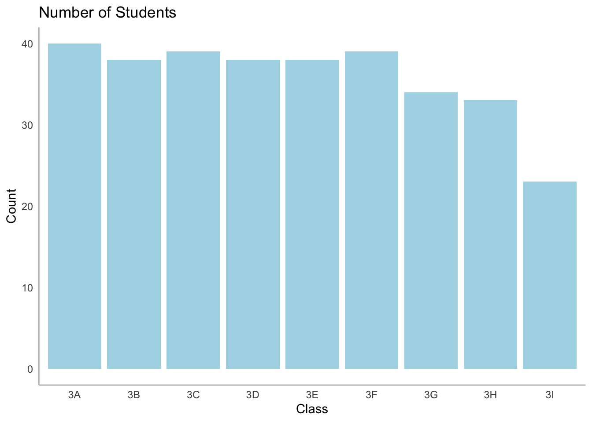
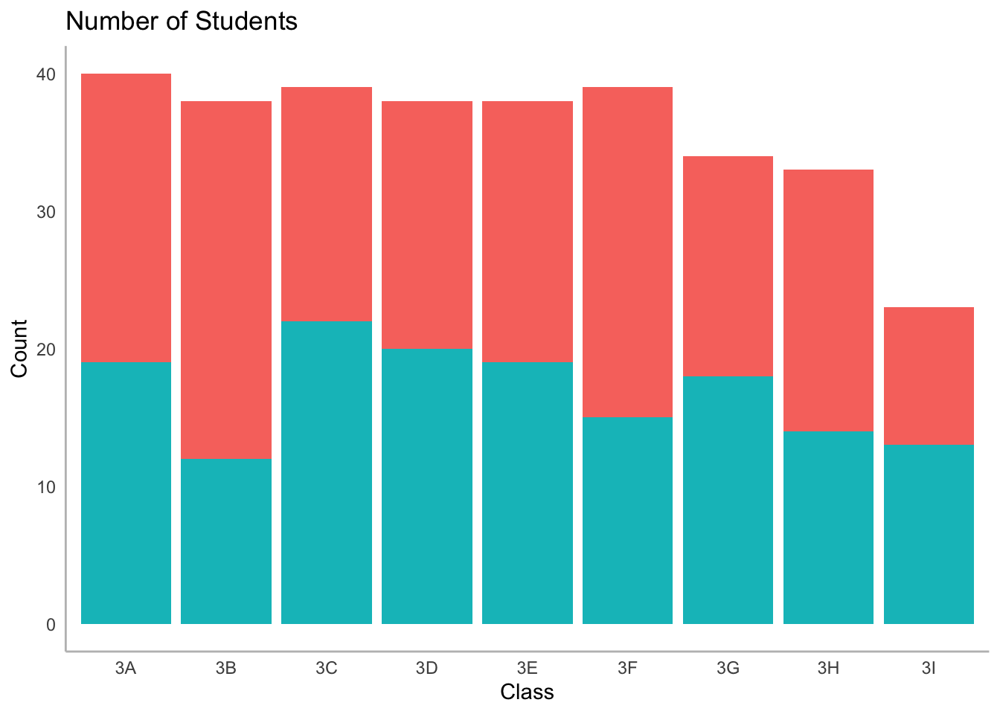
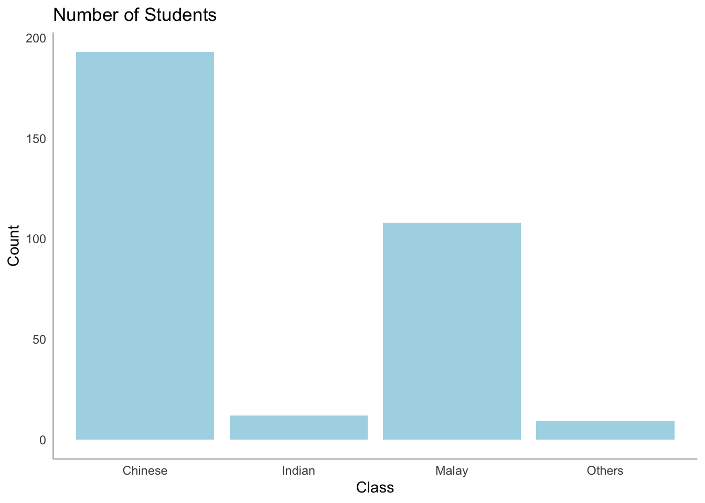

pacman::p_load(tidyverse)1 Layered Grammar of Graphics: ggplot2 methods

1 Learning Objectives
- Basic principles and essential components of ggplot2
- Plot statistical graphics based on the principle of Layered Grammar of Graphics
2. Load Package
ggplot2 is a R package dedicated to data visualization by builds charts through layers using geom_ functions. It can greatly improve the quality and aesthetics of graphics.
Cheatsheet

3. Load Data
exam_data <- read.csv("data/Exam_data.csv")
summary(exam_data) ID CLASS GENDER RACE
Length:322 Length:322 Length:322 Length:322
Class :character Class :character Class :character Class :character
Mode :character Mode :character Mode :character Mode :character
ENGLISH MATHS SCIENCE
Min. :21.00 Min. : 9.00 Min. :15.00
1st Qu.:59.00 1st Qu.:58.00 1st Qu.:49.25
Median :70.00 Median :74.00 Median :65.00
Mean :67.18 Mean :69.33 Mean :61.16
3rd Qu.:78.00 3rd Qu.:85.00 3rd Qu.:74.75
Max. :96.00 Max. :99.00 Max. :96.00 glimpse(exam_data)Rows: 322
Columns: 7
$ ID <chr> "Student321", "Student305", "Student289", "Student227", "Stude…
$ CLASS <chr> "3I", "3I", "3H", "3F", "3I", "3I", "3I", "3I", "3I", "3H", "3…
$ GENDER <chr> "Male", "Female", "Male", "Male", "Male", "Female", "Male", "M…
$ RACE <chr> "Malay", "Malay", "Chinese", "Chinese", "Malay", "Malay", "Chi…
$ ENGLISH <int> 21, 24, 26, 27, 27, 31, 31, 31, 33, 34, 34, 36, 36, 36, 37, 38…
$ MATHS <int> 9, 22, 16, 77, 11, 16, 21, 18, 19, 49, 39, 35, 23, 36, 49, 30,…
$ SCIENCE <int> 15, 16, 16, 31, 25, 16, 25, 27, 15, 37, 42, 22, 32, 36, 35, 45…4, Explore Data
ggplot(data = exam_data,
aes(x = CLASS))+
geom_bar(fill = "lightblue")+
labs(title = "Number of Students", x = "Class", y = "Count")+
theme_minimal()+
theme(legend.position = "none",
panel.grid.major = element_blank(),
panel.grid.minor = element_blank(),
axis.line = element_line(colour = "grey"))
ggplot(data = exam_data,
aes(x = GENDER))+
geom_bar(fill = "lightblue")+
labs(title = "Number of Students", x = "Gender", y = "Count")+
theme_minimal()+
theme(legend.position = "none",
panel.grid.major = element_blank(),
panel.grid.minor = element_blank(),
axis.line = element_line(colour = "grey"))
ggplot(data = exam_data,
aes(x = CLASS,
fill = GENDER))+
geom_bar()+
labs(title = "Number of Students", x = "Class", y = "Count")+
theme_minimal()+
theme(legend.position = "none",
panel.grid.major = element_blank(),
panel.grid.minor = element_blank(),
axis.line = element_line(colour = "grey"))
ggplot(data = exam_data,
aes(x = RACE))+
geom_bar(fill = "lightblue")+
labs(title = "Number of Students", x = "Class", y = "Count")+
theme_minimal()+
theme(legend.position = "none",
panel.grid.major = element_blank(),
panel.grid.minor = element_blank(),
axis.line = element_line(colour = "grey"))